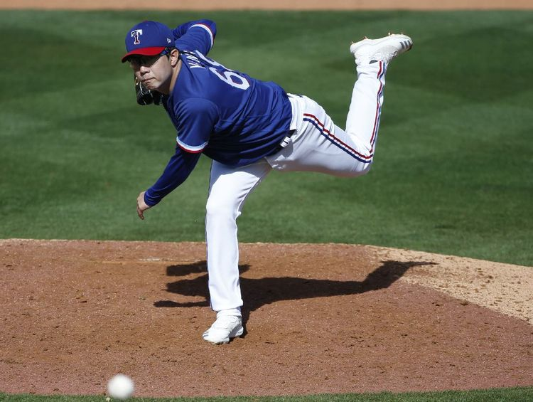

2007년 KIA 타이거즈에서 데뷔해 2번의 통합우승을 함께한 투수이다. 현역 투수 중 KBO 통산 다승ㆍ이닝ㆍ탈삼진ㆍWAR 1위 기록을 보유하고 있다. 21세기 국내 선수 중 유일하게 2점대 ERAㆍ20승ㆍ200이닝을 모두 달성하고, 골든글러브ㆍ정규시즌 및 한국시리즈 MVPㆍ최동원 상을 모두 수상했다. 동시에 7년간 다승ㆍ탈삼진ㆍQSㆍQS+ 등 누적스탯 뿐 아니라 평균 ERAㆍWHIPㆍ피안타율ㆍ피출루율ㆍ피장타율 등에서 리그 선두권의 비율스탯을 기록했다.
33세에 147승을 거두며 타이거즈 통산 다승 2위, KBO 통산 다승 4위에 랭크됐다. KBO 통산 누적스탯에서 투구 WAR 6위ㆍ선발 WAR 3위ㆍ탈삼진 4위ㆍ이닝 7위 등 선두권을 차지하고 있다. 2010년대에 출전한 포스트시즌에서 ERA 0을 기록했다. 류현진, 김광현과 함께 좌완 트로이카로 불린다.